justin-overshirt-idle.svg
36 × 62 px · 1300 / 160 / 1300 ms, loops
standing, blinking: the daytime masthead pose
justin-overshirt-idle-0.svg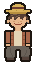
justin-overshirt-idle-1.svgjustin-overshirt-idle-2.svgPixel sprites exported from the site's sheets as plain SVG. Each action is shown at true size and at 4×. Animated files switch frames with a CSS animation inside the SVG, so an <img> plays them. Place them at true size or a whole-number multiple, never in between, feet on a hairline rule. See README.md for the rules.
Justin in his straw hat (loosely Luffy's), a rust over-shirt open over a plain oat tee, and loose textured trousers. The site shows this outfit from 06:00 to 17:59 San Francisco time.
justin-overshirt-idle.svg
36 × 62 px · 1300 / 160 / 1300 ms, loops
standing, blinking: the daytime masthead pose
justin-overshirt-idle-0.svg
justin-overshirt-idle-1.svgjustin-overshirt-idle-2.svgjustin-overshirt-walk.svg
36 × 62 px · 200 ms per frame, loops
side view, facing right; stride 7 px per frame
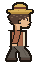
justin-overshirt-walk-0.svg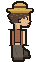
justin-overshirt-walk-1.svg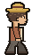
justin-overshirt-walk-2.svg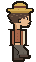
justin-overshirt-walk-3.svg
justin-overshirt-sit.svg
52 × 52 px · 3200 / 160 ms, loops
sitting on the rule: the evening masthead pose, and the footer

justin-overshirt-sit-0.svg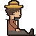
justin-overshirt-sit-1.svg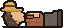
justin-overshirt-sleep-0.svg
64 × 28 px · 1 frame, static
lying on the rule: the night masthead pose
justin-overshirt-sleep-0.svg
justin-overshirt-sip.svg
36 × 62 px · 2600 / 1000 ms, loops
espresso: the morning masthead pose
justin-overshirt-sip-0.svg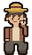
justin-overshirt-sip-1.svg
justin-overshirt-hat-0.svg
36 × 62 px · 1 frame, static
tips the hat while the pointer is on his name
justin-overshirt-hat-0.svg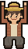
justin-overshirt-arms-up-0.svg
36 × 62 px · 1 frame, static
both arms up for 1.8 s after someone types 1070
justin-overshirt-arms-up-0.svgThe same frames with the over-shirt swapped for a slate hoodie, hood down on the shoulders. The site shows this outfit from 18:00 to 05:59 San Francisco time.
justin-hoodie-idle.svg
36 × 62 px · 1300 / 160 / 1300 ms, loops
standing, blinking: the daytime masthead pose
justin-hoodie-idle-0.svg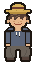
justin-hoodie-idle-1.svg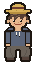
justin-hoodie-idle-2.svgjustin-hoodie-walk.svg
36 × 62 px · 200 ms per frame, loops
side view, facing right; stride 7 px per frame
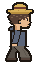
justin-hoodie-walk-0.svg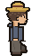
justin-hoodie-walk-1.svg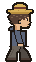
justin-hoodie-walk-2.svg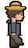
justin-hoodie-walk-3.svgjustin-hoodie-sit.svg
52 × 52 px · 3200 / 160 ms, loops
sitting on the rule: the evening masthead pose, and the footer

justin-hoodie-sit-0.svg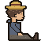
justin-hoodie-sit-1.svg
justin-hoodie-sleep-0.svg
64 × 28 px · 1 frame, static
lying on the rule: the night masthead pose
justin-hoodie-sleep-0.svgjustin-hoodie-sip.svg
36 × 62 px · 2600 / 1000 ms, loops
espresso: the morning masthead pose
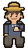
justin-hoodie-sip-0.svg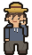
justin-hoodie-sip-1.svg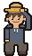
justin-hoodie-hat-0.svg
36 × 62 px · 1 frame, static
tips the hat while the pointer is on his name
justin-hoodie-hat-0.svgjustin-hoodie-arms-up-0.svg
36 × 62 px · 1 frame, static
both arms up for 1.8 s after someone types 1070
justin-hoodie-arms-up-0.svgJustin's female brindle French bulldog. She sleeps on the bottom rule of her card; the cursor on the card lifts one ear, the cursor on her gets her to sit up.

truffle-sleep.svg
36 × 20 px · 2300 / 700 ms, loops
asleep on her card's bottom rule, breathing
truffle-sleep-0.svg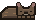
truffle-sleep-1.svgtruffle-ear.svg
36 × 20 px · 1100 / 300 ms, then holds frame 2
one ear pricks up when the cursor enters her card; plays once and holds
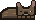
truffle-ear-0.svg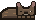
truffle-ear-1.svgtruffle-ear-2.svg
truffle-sit-0.svg
24 × 24 px · 1 frame, static
sits up while the cursor is on her
truffle-sit-0.svgtruffle-walk.svg
34 × 26 px · 110 ms per frame, loops
a stroll, facing right; stride 2 px per frame
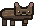
truffle-walk-0.svg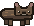
truffle-walk-1.svg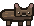
truffle-walk-2.svg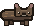
truffle-walk-3.svg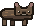
truffle-walk-4.svg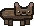
truffle-walk-5.svg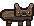
truffle-walk-6.svg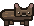
truffle-walk-7.svgtruffle-trot.svg
34 × 26 px · 90 ms per frame, loops
a trot, facing right; stride 6 px per frame
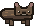
truffle-trot-0.svg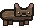
truffle-trot-1.svg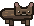
truffle-trot-2.svg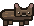
truffle-trot-3.svgOne of Justin's two agents: a blue robot in the same straw hat and Justin's slate hoodie. He waves while the pointer is on him.

luibot-idle.svg
28 × 32 px · 2800 / 160 ms, loops
standing, blinking
luibot-idle-0.svg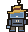
luibot-idle-1.svgluibot-wave.svg
28 × 32 px · 220 ms per frame, loops
waves while the pointer is on him
luibot-wave-0.svg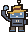
luibot-wave-1.svgJustin's other agent: an orange, boxy robot in the straw hat and the rust over-shirt, one hand resting on a stone block. He tips his hat while the pointer is on him.

luibuilder-idle.svg
30 × 34 px · 3400 / 160 ms, loops
standing, blinking
luibuilder-idle-0.svg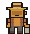
luibuilder-idle-1.svgluibuilder-wave.svg
30 × 34 px · 240 ms, then holds frame 1
tips his hat while the pointer is on him; plays once and holds
luibuilder-wave-0.svg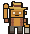
luibuilder-wave-1.svgRolls up to Truffle's nose the first time her card scrolls into view. On the site its frame is driven by how far it has travelled (a quarter turn per frame, one turn per circumference), not by a clock.
ball-roll.svg
10 × 10 px · 1200 ms per frame, loops
a quarter turn per frame, rolling to the right; frame 0 is at rest
ball-roll-0.svgball-roll-1.svgball-roll-2.svgball-roll-3.svg